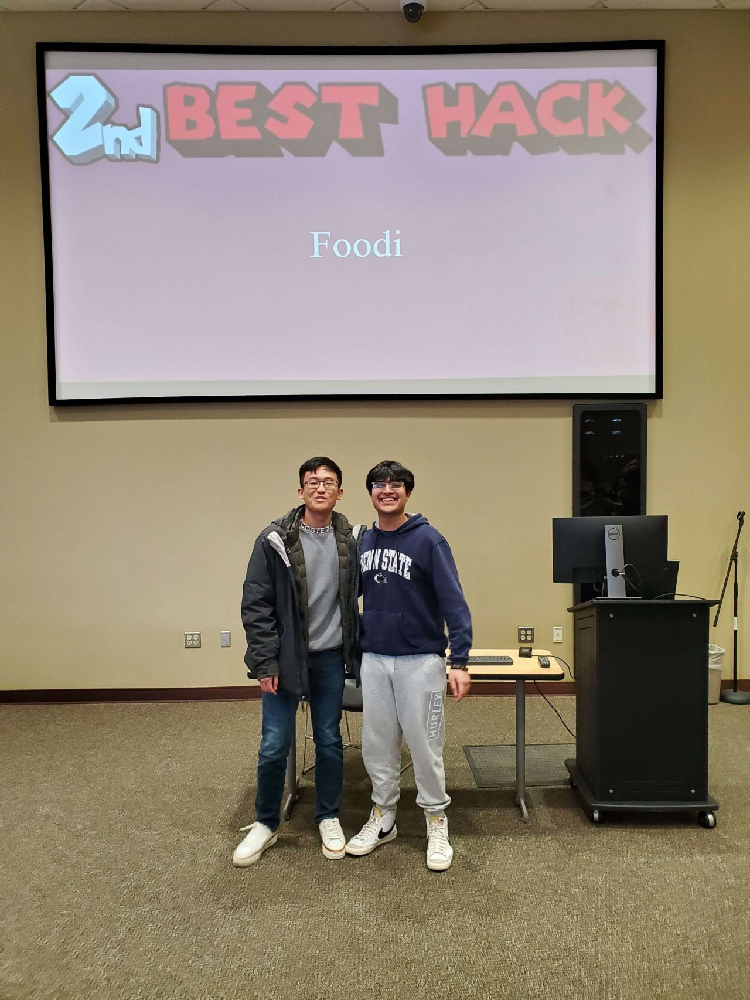

Software Developer
Second place HackBU Hackathon 2024 web app that utilizes a machine learning model, React.js front end, Node.js back end, and various APIs to scan food and provide macronutrients on all devices!
Acess the web app on one of my teamates' website: Foodi
Learn more about our project on the DevPost: DevPost
Find the code on GitHub: GitHub Repository
This project utilizes a Weather API to fetch and display weather information. This is the current weather with the precipitation followed by the 7 day forecast for New York City!
Find the code on GitHub: GitHub Repository
Randomly generate pokemon to do 1v1 battles with them and even display images of them when you run it!
Find the code on GitHub: GitHub Repository
Used a machine learning algorithm and CNN to detect whether people will get their housing loan approved and tested whether race played a factor in these decisions.
Find the code on GitHub: GitHub Repository
Created a dynamically allocated array class from scratch that replaced the use of the Vector data structure. Used the array class to organize a movie and actor database.
Find the code on GitHub: GitHub Repository
Created a function that can take a double value and convert it to a floatx value.
Find the code on GitHub: GitHub Repository
The labs and side projects that led up to these larger projects can all be found via this link. Defintely check out image border tracking to get better at analyzing images via Python!
Find my projects on my GitHub profile: My GitHub Profile